<div class="content-home">

    <div class="home-box medias">
       
      <div class="media-title">
        
        <h1>Media maps</h1>
      </div>

      <div class="title-section pointer" ng-click="goMyMaps()">My maps</div>

      <div class="title-section pointer" ng-click="goPublicMaps()">Public maps</div>

      <div class="title-section pointer" ng-click="goCreateMap()">Create new map</div>

    </div>

</div>